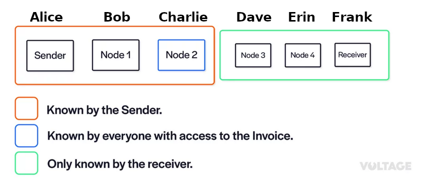
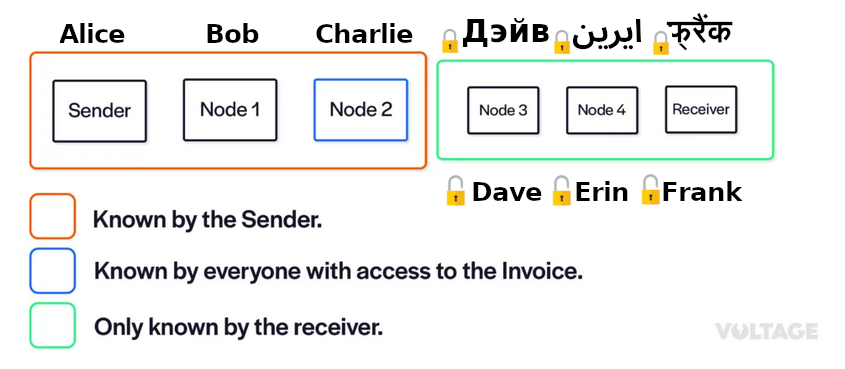

Blinded paths
How to achieve recipient privacy
Remember Routing in LN
- It's source-based
- Sender constructs entire payment path
Remember Onion Routing
- Sender knows receiver
- Sender constructs onion
- Each hop peels a layer of encryption and learns the next hop

Sender needs to know everything
If the recipient is obfuscated, how can the sender even construct the (onion) path?
Rendez-vous routing (simplified)
- Sender: Alice
- Receiver: Frank
- Frank tells Erin to himself (Frank)
- Frank tells Dave to forward to Erin
- Frank tells Charlie to forward to Dave
- Frank puts Charlie as receiver in the invoice
- Alice creates route: Alice -> Bob -> Charlie
Result
It works!
Yes, except this is not what's being implemented
Blinded paths
- Sender still constructs entire path
- Receiver provides sender with a blinded path and introduction point
- Blinded path: Node id and address are encrypted
- Each node can decrypt the next hops id and address
Unveil next hop

Result
Blinded Path vs Rendez-vous routing
Benefits of Blinded Paths
- Implementation similar to vanilla payment routing (sender constructed)
- Reuse onions across multiple invoices
Disadvantages
- Weaker privacy guarantees
- Bigger invoices
Consequences
- Unknown receiver
-
More hops
- Higher fees
- More time consuming
- Less reliability
- Bigger invoices
- More complex on payment failures
Adoption
- Under development?
- Experimental feature in Core-Lightning
- Both sender and receiver need to support protocol